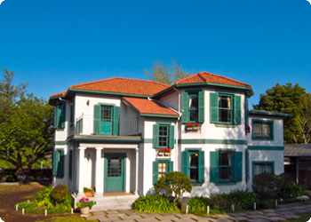
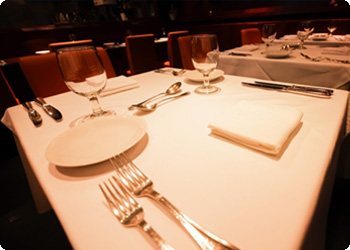
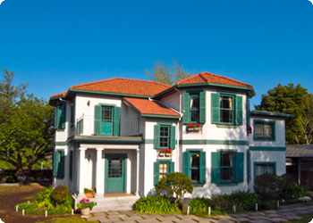
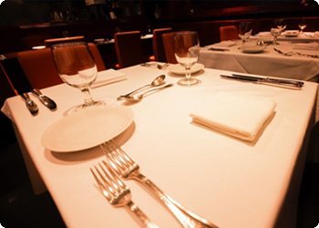

ショップ
レストラン、ショップなどは営業時間などが異なります、あらかじめご確認のうえ、ご利用ください。
ショップ「ばらの家」

ショップ「バラの家」では園内植物などを利用した土産ものの購入ができます。
(営業時間：10:00～19:00)
レストラン「Flower Kitchen」

レストラン「Flower Kitchen」では旬の食材や園内菜園でとれた野菜、ハーブを利用した自慢の料理を提供します。 ケーキはテイクアウトできます。
(営業時間：10:00～22:00)
レストラン、ショップなどは営業時間などが異なります、あらかじめご確認のうえ、ご利用ください。

ショップ「バラの家」では園内植物などを利用した土産ものの購入ができます。
(営業時間：10:00～19:00)

レストラン「Flower Kitchen」では旬の食材や園内菜園でとれた野菜、ハーブを利用した自慢の料理を提供します。 ケーキはテイクアウトできます。
(営業時間：10:00～22:00)